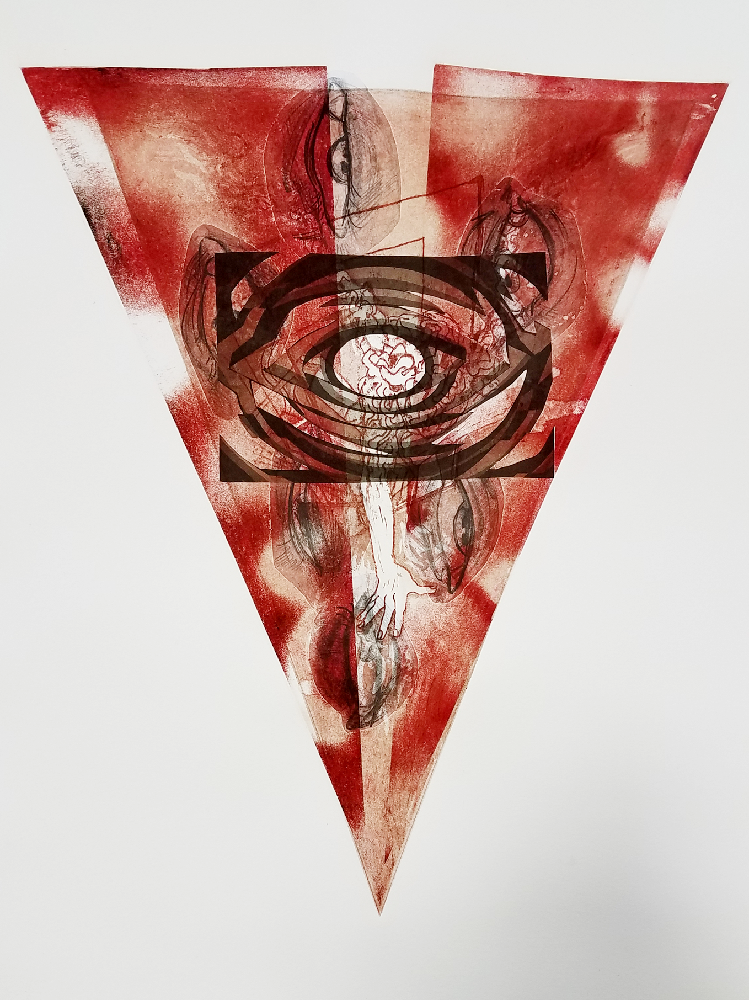

Lugosi, Woodcut, 29" x 13", edition of 10, 2019. From my vampire woodcut series.

Wax and Wane, Intaglio and chine colle, monotype, 13" x 9", 2019. Monotype using intaglio plates I created for a larger edition

Panic, Silkscreen edition of 13, 29” x 16” 2020. A 13 layer silkscreen print combining digital, hand cut, and drawn stencils. An experimental exploration into queer identity and warped self perception embodying the fear of being predetory

Bodies, Woodcut, 29" x 13", edition of 10, 2019. From my vampire woodcut series.

Drain, Woodcut reduction, 15" x 10", edition of 5, 2019. From my vampire woodcut series.

Untitled, Silkscreen, 20" x 14", edition of 6, 2020. Experimental silkscreen in shape and line.